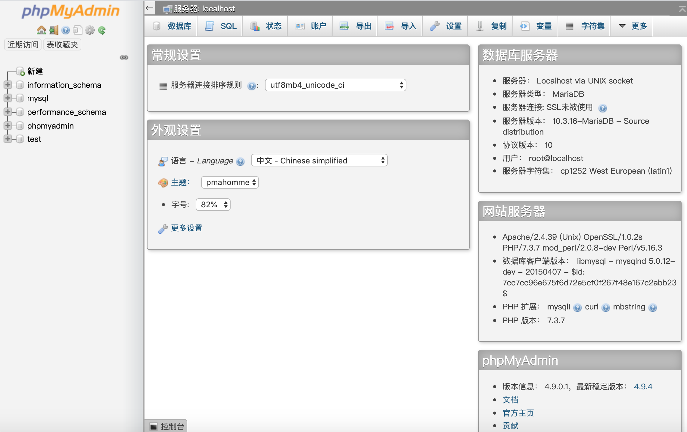
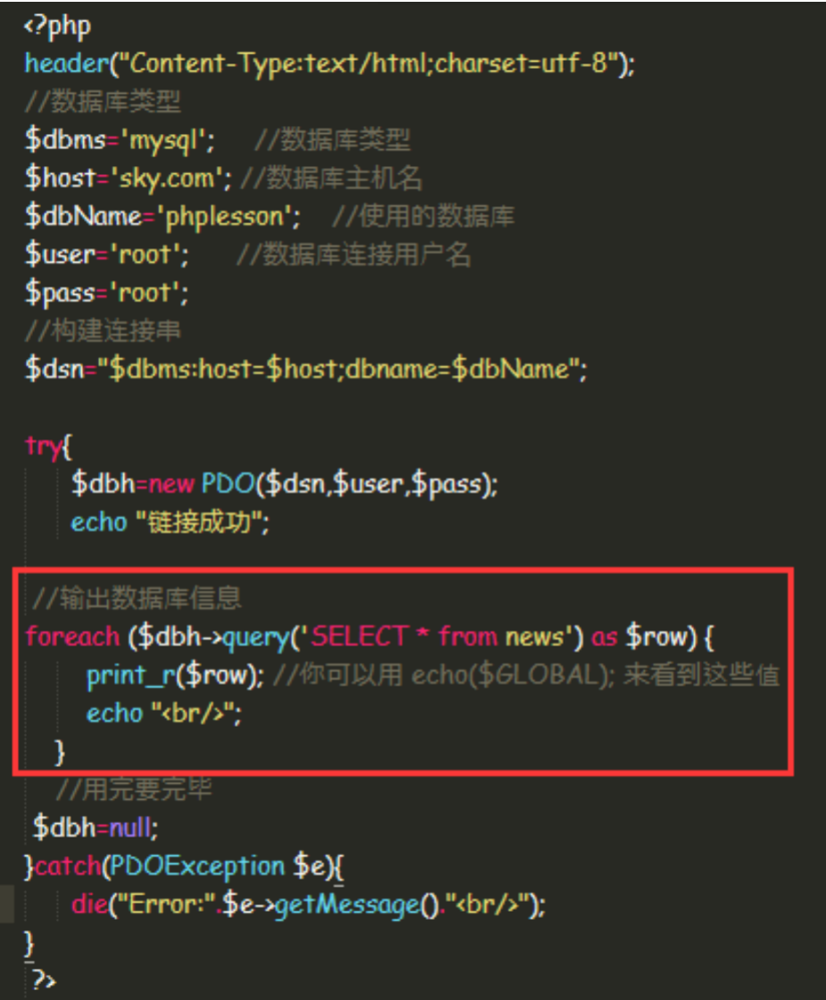
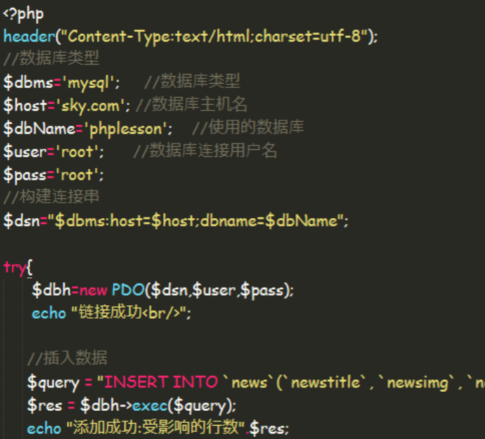
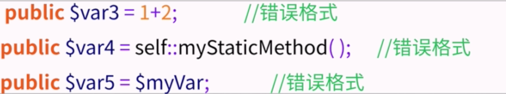
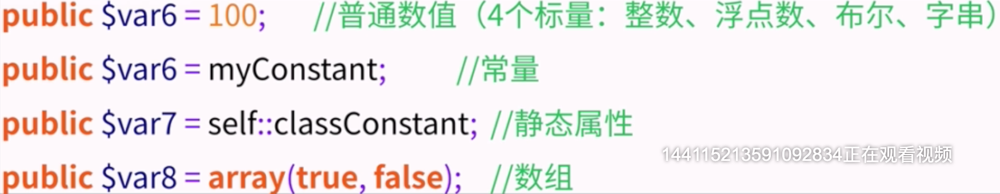

# PHP
# 1.初识PHP
- PHP（外文名：PHP Hypertext Preprocessor，中文：“超文本预处理器”）是一种通用开源脚本语言。语法吸收了C语言、Java和Perl的特点，利于学习，Perl以及PHP自创的语法。它可以比CGl或者Perl更快速地执行动态网页。用PHP做出的动态网页与其他的编程语言相比，PHP是将程序嵌入到HTML（标准通用标记语言下的一个应用）文档中去执行，执行效率比完成生成HTML标记的CGl要高许多；PHP还可以执行编译后代码，编译可以达到加密和优化代码运行，使代码运行更快。
先通过PHP来了解一下后端，对于前端来说是最容易的，因为就算第一次接触PHP，也能看懂大部分的代码。例如下面的一些代码：
1.写一个判断
<?php
if(1>3){
echo "不正确";
}else{
echo "正确";
}
?>
2
3
4
5
6
7
2.定义变量
<?php
$a="变量";
echo $a;
?>
2
3
4
3.php是否是块级作用域
<?php
if(false){
$a="变量";
}
echo $a;
?>
2
3
4
5
6
4.判断一个变量是否被声明
if(false){
$a="测试";
}
if(isset($a)){
echo "我是一个声明的";
}else{
echo "我没声明";
}
2
3
4
5
6
7
8
5.外部变量变成全局
$a="我是外面的";
function test(){
global $a;//这行
echo $a;
}
test();
2
3
4
5
6
6.$GLOBALS['variable'] = something
$a="我是外面的";
function test(){
global $a;
$GLOBALS['a'] = "我改了"; //这行代码意思是在所有php文件里面，全局变量里都生效
echo $a;
}
test();
2
3
4
5
6
7
7.引入别的脚本
require_once('b.php')
include_once('b.php')
2
两种引入方法，两者的区别就是include不论有没有引入错误，肯定是要执行的，require就和php文件融为一体了.
8.php数组
$arrayTest=array('0'=>"苹果",'1'=>"鸭梨");
echo json_encode($arrayTest,JSON_UNESCAPED_UNICODE);
2
9.session会话机制
如果执行过相应的php文件，打开过这个页面，在这个网站又打开别的页面，就像跟浏览器做了一次对话，往session里存一个东西，就能相应的取到
//b.php：
<?php
$GLOBALS['b'] = "啦啦啦啦";
session_start();
$_SESSION['views']=1;
?>
//a.php：
<?php
include_once('b.php');
echo $_SESSION['views'];
?>
2
3
4
5
6
7
8
9
10
11
访问一遍b.php，再去访问a.php，就能取到views的值.
10.发送请求
//b.php：
<!DOCTYPE html>
<html lang="en">
<head>
<meta charset="UTF-8">
<title>Document</title>
</head>
<body>
<form action="a.php" method="get">
<label>用户</label>
<input type="text" name="username">
<p>
<label>密码</label>
<input type="text" name="password">
</p>
<input type="submit" value="提交">
</form>
</body>
</html>
//a.php：
<?php
echo $_GET['username'];
?>
2
3
4
5
6
7
8
9
10
11
12
13
14
15
16
17
18
19
20
21
22
23
简单修改下上边的代码就可以写一个表单验证。
# 2.PHP与MySQL
什么是MySQL？
MySQL是一种数据库，数据库定义了存储信息的结构。
在数据库中，存在着一些表。类似 HTML 表格，数据库表含有行、列以及单元。
MySQL是关系型数据库，什么是关系型，就比如一个萝卜，一个坑，两个萝卜之间没什么关系，如果这两个萝卜根是连在一起的，那它们就是有关系的，这样就是关系型。
经常使用MySQL的一些操作。
- 第一步：新建数据库 
- 第二步：新建表
安装完数据库，首先点击phpMyAdmin，新建左侧一个数据库叫PHPlesson，然后新建一个表叫news。

- 第三步：完善表结构
在表结构里插入几条表名称

- 第三步：查询
点击SQL，介绍了可以对表内容进行查找，插入，删除，更新操作。
 eg：插入一条数据
eg：插入一条数据

# 3.PHP与MySQL连接
了解完PHP与MySQL之后，就来实际的结合起来使用了。
- 语法
mysql_connect(servername,username,password);
| 参数 | 描述 |
|---|---|
| servername | 可选。规定要连接的服务器。默认是 "localhost:3306" |
| username | 可选。规定登录所使用的用户名。默认值是拥有服务器进程的用户的名称 |
| password | 可选。规定登录所用的密码。默认是 "" |
在页面里添加这段连接数据库的代码：
...
<?php
$con = mysqli_connect("localhost","root","");
if (!$con)
{
die('Could not connect: ' . mysql_error());
}else{
echo "ok";
}
mysql_close($con);
?>
2
3
4
5
6
7
8
9
10
11
mysqli_connect
根据w3c里的例子用的是mysql_connect 可能会报错，如果报错改成mysqli_connect
连接成功后，向数据库里插入数据：
<?php
$con = mysqli_connect("localhost","root","");
if (!$con){
die('Could not connect: ' . mysql_error());
}else{
mysqli_select_db($con,"PHPlesson");
mysqli_query($con,'set names utf8');
//防止乱码，一定要加在插入数据前
$sql="INSERT INTO `news`(`newstitle`, `newsimg`, `newcontent`, `addtime`) VALUES ('haha','图片地址','图片内容','2020-01-20')";
$result=mysqli_query($con,$sql);
if (!$result){
die('Error: ' . mysqli_error($con));
}else{
echo "成功";
}
}
mysqli_close($con);
?>
2
3
4
5
6
7
8
9
10
11
12
13
14
15
16
17
18
mysqli_query mysqli_select_db
同样注意这里可能会报错
接下来，就可以写一个完整的例子，前后端数据交互，首先新建一个html文件
//主要代码
<form action="mysql.php">
<p>
<label for="newstitle">标题</label>
<input type="text" id="newstitle" name="newstitle"/>
</p>
<p>
<label for="newsimg">图片</label>
<input type="text" id="newsimg" name="newsimg"/>
</p>
<p>
<label for="newcontent">内容</label>
<input type="text" id="newcontent" name="newcontent"/>
</p>
<p>
<label for="addtime">时间</label>
<input type="date" id="addtime" name="addtime"/>
</p>
<p>
<input type="submit" value="提交"/>
<input type="reset" value="重置"/>
</p>
</form>
2
3
4
5
6
7
8
9
10
11
12
13
14
15
16
17
18
19
20
21
22
23
然后在mysql.php中添加，完成前台数据插入到数据库的工作。
...
$newstitle=$_REQUEST['newstitle'];
$newsimg=$_REQUEST['newsimg'];
$newcontent=$_REQUEST['newcontent'];
$addtime=$_REQUEST['addtime'];
mysqli_query($con,'set names utf8');
$sql="INSERT INTO `news`(`newstitle`, `newsimg`, `newcontent`, `addtime`) VALUES ('".$newstitle."','".$newsimg."','".$newcontent."','".$addtime."')";
...
2
3
4
5
6
7
8
如果想把后台的数据以json的形式打印到一个地址，然后前台ajax请求这个地址，把内容打印到前台上。
<?php
header("Content-type:application/json;charset=utf-8");
$con = mysqli_connect("localhost","root","");
if (!$con)
{
die('Could not connect: ' . mysql_error());
}else{
mysqli_select_db($con,"PHPlesson");
$sql="select * from news";
mysqli_query($con,'set names utf8');
$result=mysqli_query($con,$sql);
$arr=array();
while($row = mysqli_fetch_array($result))
{
array_push($arr,array("newstitle"=>$row['newstitle'],"newsimg"=>$row['newsimg']));
}
echo json_encode($arr);
}
mysqli_close($con);
?>
2
3
4
5
6
7
8
9
10
11
12
13
14
15
16
17
18
19
20
- php pdo入门
因为php的版本，如果php与数据库连接失败，可以尝试用pdo，php更新后，推崇用pdo，它提供了比较完备操作数据库的过程。
连接数据库，输出数据库信息  往数据库里插入信息 
# 4.PHP面向对象介绍
1. 面向对象介绍
面向对象的产生
1.软件危机
软件危机是指落后的软件生产方式无法满足迅速增长的计算机软件需求，从而导致软件开发与维护过程中出现一系列严重问题的现象。泛指在计算机软件的开发和维护过程中所遇到的一系列严重问题。
2.软件工程学
软件工程学，是一门研究用工程化方法构建和维护有效的、实用的和高质量的软件的科学，它涉及到程序设计语言、数据库、软件开发工具、系统平台、标准、设计模式等方面。分为结构化方法（按软件周期分为三个阶段 分析、设计、编程）和面向对象。
面向对象的概念（OOP）
- 面向对象
OOP（Object-Oriented Programming,面向对象的编程）技术为编程人员敞开了一座大门，使其编程的代码更简洁、更易于维护，并且具有更强的可重用性。
OOP达到了软件工程的三个目标：重用性、灵活性、拓展性。
OOP面向对象编程的特点：封装、继承、多态。
- 类与对象之间的关系
比如人就是一个类，具体某个人就是对象，早期js没有类，但是v8里有隐藏的类。
- 面向对象程序设计
认识面向对象
面向对象的三大特性：对象的行为、对象的状态、对象的标识。
2. 如何抽象一个类
类的声明
es6声明类还不是很健全，php的类和其他语言基本上一样
简单格式
[修饰符] class 类名{ [成员属性] [成员方法] }完整格式
[修饰符] class 类名 [extends 父类][implements 接口1[,接口2...]]{ [成员属性] [成员方法] }成员属性
格式：修饰符 $变量名[=默认值]//如：public $name="zhangsan";注意：成员属性不可以是带运算符的表达式、变量、方法或函数调用.  
成员方法
成员方法格式： [修饰符] function 方法名(参数..){ [方法名] [return 返回值] }
3. 通过类实例化对象
实例化对象
当定义好类后，我们使用new关键字来生成一个对象。
$对象名称=new 类名称();$对象名称=new 类名称([参数列表]);对象中成员的访问
语法：$引用名=new 类名(构造参数);$引用名->成员属性=赋值;//对象属性赋值echo $引用名->成员属性;//输出对象的属性$引用名->成员方法(参数);//调用对象方法特殊对象引用$this
public function play(){
echo "..."
}
public function info(){
$this->play();
return "{$this->width},{$this->height}"
}
2
3
4
5
6
7
4.构造方法与析构方法
- 构造方法
用途：当这个类new的时候自动执行的，所有可以把一些属性写进去。
语法格式：
[修饰符] function __construct([参数]){ ... }
- 析构方法
用途：对象被销毁的时候执行，可以进行资源的释放操作，比如数据库关闭、读取文件关闭。
语法格式：
[修饰符] function __destruct([参数]){ ... }
5.PHP面向对象之封装性
- 设置私有成员与私有成员访问
- 修饰符 private 封装后的成员在对象的外部不能直接访问，只能在对象的内部方法中使用 $this访问。
class person{ private $name; public function say(){ return $this -> name; } }1
2
3
4
5
6 - 魔术方法 __set() 针对protected private对象，这个方法接收两个参数，第一个是key（就是要动的值），第二个是value，就是要这个值。这个方法用途可以做劫持。
- 魔术方法 __get() 针对protected private对象， 和set方法类似，参数只有一个key。
- 魔术方法 __isset() 针对protected private对象，参数只有一个key，这个方法用途是可以看到某个变量有没有
- 魔术方法 __unset() 针对protected private对象，这个方法用途是可以销毁某个变量。
6.PHP面向对象之继承和多态
- 继承 PHP只支持单继承，一个子类只能有一个父类，但一个父类可以被多个子类继承。
在子类中，protected的访问权限是可以的，而private还是不可以
- 多态 是指在父类中定义的属性或行为被子类继承之后，可以具有不同的数据类型或表现出不同的行为。这使得同一个属性或行为在父类及其各个子类中具有不同的语义。
- 在子类里面允许重写（覆盖）父类的方法
- 在子类中，使用parent访问父类中被覆盖的属性和方法 如何在子类中重写：
继承构造函数：
在子类构造函数第一行加 parent::__construct(参数)就可以。
继承某个方法：
在子类方法中第一行加 parent::__方法名(参数)。
7.抽象类与接口
抽象方法和抽象类
当类中有一个方法，他没有方法体，也就是没有花括号，直接分号结束，像这种方法我们叫做抽象方法，必须使用关键字abstract定义
如：public abstract function fun()；
包含这种方法的类必须是抽象类也要使用关键字abstract加以声明。
抽象类的特点：
不能实例化，也就是不能new成对象
若想使用抽象类，就必须定义一个类去继承这个抽象类，并定义覆盖父类的抽象方法（实现抽象方法）
接口
PHP不支持多重继承，所有引入接口，接口的思想是指定了一个实现了该接口的类必须实现的一系列函数。
定义格式：interface 接口名称{
//常量成员（使用const关键字定义）
//抽象方法（不需要abstract关键字）
}
使用格式：class 类名 implements 接口1，接口2{...}
区别：当你关注一个事物的本质，用抽象类，当关注一个操作的时候，用接口。
- 接口是抽象类的变体，接口中所有的方法都是抽象的。而抽象类是声明方法的存在而不去实现它的类。
- 接口可以多继承，抽象类不行
- 接口定义方法，不能实现，而抽象类可以实现部分方法。
- 接口中基本数据类型为static而抽象类不是的。
- 接口中不能含有静态代码块以及静态方法，而抽象类可以。 8.常见关键字
- final关键字
- static关键字
- 单例设计模式
- const关键字
- instanceof关键字